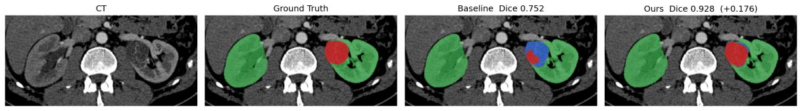

Research highlight專題重點
Treat multi-resolution fusion as a prediction–update process: pass an internal state between scales, improving kidney and lesion segmentation while reducing parameter count and GFLOPs.
將多解析度融合寫成預測與更新流程，讓內部狀態跨尺度傳遞；在改善腎臟與病灶分割的同時，減少參數量與計算量。
Project abstract專題摘要
Downsampling can discard local detail needed for 3D kidney and tumor segmentation. KalMed-UNet builds on UMambaBot and introduces a Kalman-inspired fusion module in the encoder: strided-convolution features are updated using a pooling-projection branch, with the residual and an internal uncertainty proxy P controlling the fusion gain. P is propagated across resolutions and used in decoder fusion inspired by backward smoothing. On the 489 cases in the public KiTS23 training set, matched five-fold cross-validation with 1,000 training epochs improves mean Dice from 0.8700 to 0.8813. Kidney-region, mass, and tumor Dice all increase, and every fold improves. Parameter count and GFLOPs decrease by 1.31% and 4.48%, respectively. The results support the integrated fusion design under the reported training and evaluation protocol.
三維腎臟腫瘤分割需要保留局部邊界與病灶細節。本專題以 UMambaBot 為基準，於編碼器下採樣加入卡爾曼啟發式融合：以步幅卷積作為預測、池化投影作為觀測，利用殘差與不確定度代理量 P 決定融合增益，再將 P 跨解析度傳遞至解碼器，進行受後向平滑啟發的融合。於 KiTS23 公開訓練集 489 例進行 1,000 epochs、五折交叉驗證，平均 Dice 由 0.8700 提升至 0.8813，三個階層評估目標與五個 fold 皆改善；參數量與 GFLOPs 分別降低 1.31% 與 4.48%。結果支持整合式融合設計在既定訓練與評估流程下的效益。
Method方法設計
Two complementary downsampling branches雙分支下採樣
Align strided-convolution and max-pooling projection features, then update the prediction with a weighted residual.
對齊步幅卷積與最大池化投影特徵，再以加權殘差修正預測。
State propagation across scales跨尺度狀態傳遞
Carry P between resolutions so each fusion stage has an auxiliary state rather than operating independently.
將 P 在不同解析度間遞迴傳遞，讓各層融合可利用共同的輔助狀態。
Decoder refinement解碼器融合
Use the propagated state in fusion inspired by backward smoothing, while retaining the UMambaBot bottleneck as the common baseline.
利用傳遞狀態進行受後向平滑啟發的融合，並保留 UMambaBot bottleneck 作為共同基底。

Representative results代表成果
KiTS23 public training set; 489 cases; five-fold internal cross-validation; 1,000 epochs. Dice values are fold means.
KiTS23 公開訓練集 489 例；五折內部交叉驗證；1,000 epochs。Dice 為五折平均值。
| Metric指標 | UMambaBotUMambaBot | KalMed-UNetKalMed-UNet |
|---|---|---|
| Overall Dice整體 Dice | 0.8700 | 0.8813 |
| Kidney-region Dice腎臟區域 Dice | 0.9661 | 0.9807 |
| Mass Dice腫塊 Dice | 0.8378 | 0.8467 |
| Tumor Dice腫瘤 Dice | 0.8059 | 0.8165 |
| Parameters參數量 | 42.12 M | 41.57 M |
| GFLOPsGFLOPs | 1939.68 | 1852.71 |
Dice: report Tables 5–6. Architecture cost: Table 7. Its 250-epoch design-study Dice values are not mixed into the five-fold results above.
Dice 取自報告表 5–6；架構成本取自表 7。表 7 的 250 epochs 單折設計比較分數未混入上方五折結果。
View source tables →查看原始表格 →
Interpretation & scope成果解讀與適用範圍
P is a learned internal proxy, not a calibrated clinical uncertainty estimate. The efficiency evidence concerns parameter count and GFLOPs; it does not establish a measured inference speedup. The five-fold evaluation uses the public training set rather than the official hidden test set, and the full design has not been independently validated on an external dataset.
P 是網路內部的代理量，未驗證為經校準的臨床不確定度。效率證據限於參數量與 GFLOPs，未據此推定實測加速。五折評估使用公開訓練集，並非官方隱藏測試集；完整設計仍待外部資料驗證。
Full report & evidence完整報告與對應證據
The summary and figures on this page are drawn from the project report. The full report is in Traditional Chinese; page links below use the PDF page number.
本頁摘要與圖表整理自專題報告。完整報告為繁體中文；下列連結使用 PDF 檔案頁碼。
- Tables 5–7 · Main comparison and cost表 5–7：主要比較與架構成本PDF p. 32PDF 第 32 頁
- Figure 3 · Architecture圖 3：整體架構PDF p. 19PDF 第 19 頁
- Section 4.9 · Limitations4.9 節：限制與討論PDF p. 36PDF 第 36 頁